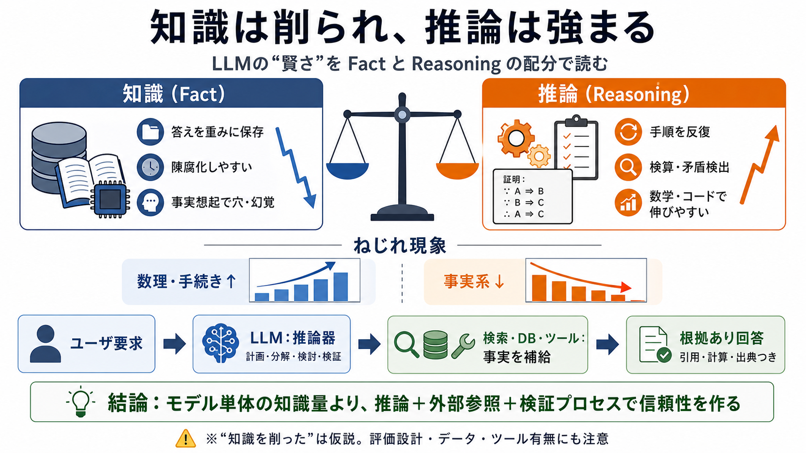

Models Are Getting Dumber on Purpose
Reasoning scores keep climbing while per-token compute keeps dropping. GLM-5.2 scores 99.2% on AIME 2026 with about 40 b…

賢さの内訳
LLM（大規模言語モデル）の「賢くなったように見える」理由を、知識（fact）と推論（reasoning）の配分から読み解きます。
ねじれ現象
数理・コード系ベンチマークでは伸びる一方、単純な事実想起や外部知識依存では取りこぼしや幻覚が目立つ、という「ねじれ」が起きます。
2種類の記憶
LLMが学習した内容は大きく2種類に分けて考えられます：事実（knowledge/fact）と、推論のやり方（procedure/reasoning）です。
MoEの視点
MoE（Mixture of Experts）ではトークンごとに活性化するパラメータ数（active parameters）が性能と密接で、「推論寄り」を支えうる指標になります。
寿命の違い
世界が変われば事実は古くなる一方、推論は普遍的な検算・矛盾検出として働きやすく、学習後の“劣化”が相対的に小さくなります。
“トレードオフ”仮説
学習のトレードオフが「事実→軽量化」「推論→強化」に寄っている可能性が高い、という見立てです。
何が“賢さ”を分ける？
評価が「検証容易（手順）か」「外部知識（事実）依存か」で結果が変わります。だから“賢さ”が全方位で上がらないように見えます。
ハルシネーションの扱い
誤答を減らす鍵は、ハーネス（検索・DB・ツール呼び出し等）で事実を外出しし、参照可能で検証可能にすることです。
推論器＋ハーネス
フロンティア級推論モデルは、知識を実行時に外部から与える前提と相性がよく、ハルシネーションを大きく抑えられる、という展望です。
ゼロにはならない
外部DBに置けば誤答は完全ゼロではありませんが、出典があり差し替え・更新が回せるため、修正速度と監査性が上がります。
読みのガイド
前提に合わせると矛盾しにくくなり、注目すべき焦点が見えてきます。
批判的に読む
因果の断定には追加の実証が必要です。知識低下は、学習データ・評価バイアス・プロンプト・ツール有無などでも起こり得ます。
実装への着地
モデル単体の“賢さ競争”から、システム全体（参照品質・更新整合性・引用と検証プロセス）へ重心を移す、という方向が価値になります。
参照の核
本文中の主張を検証・補強するための「探し方」を、最小限の観点としてまとめます。
Reasoning scores keep climbing while per-token compute keeps dropping. GLM-5.2 scores 99.2% on AIME 2026 with about 40 b…
| | | | | --- --- | | | Kimi K3 | DeepSeek V4 Pro | GLM-5.2 | | Released | July 2026 | April 2026 | June 2026 | |…
Nobody routes a latency-sensitive pipeline for the benchmark table, and here GLM 5.2 is decisively ahead: ~145–168 token…
The “best” model depends entirely on what you’re building. Here’s a quick decision guide based on the verified numbers a…
Output tokens drive the bill in reasoning workloads, and that gap is significant. GLM’s $1.74 output rate runs almost 9x…